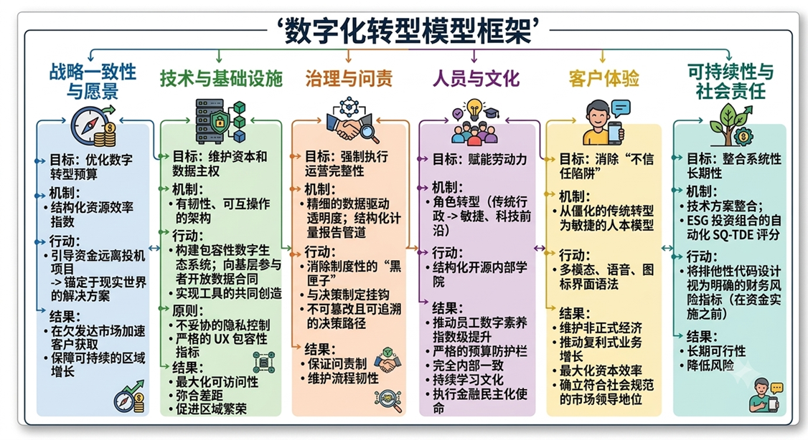

构建负责任的数字化转型
SQ-EDT 框架由六个相互关联的支柱组成，共同构成一种稳健、合乎伦理并可持续推进的数字化转型方法。
战略与愿景
通过结构化的资源效率指数优化数字化转型预算。通过将资金从投机性项目中引开，并将其锚定在为满足现实世界用户需求而构建的解决方案中，该支柱加速了服务不足市场中的客户获取，并确保了可持续的区域增长。
技术与架构
通过高度弹性、可互操作的架构捍卫公共资本和区域数据主权。该框架通过向基层经济参与者安全地开放数据合约，建立了一个包容性的数字生态系统，使他们能够共同为非正式商业创造量身定制的工具。
在毫不妥协的隐私控制和严格的用户体验包容性指标的指导下，该支柱确保每次技术部署都能最大限度地提高可访问性，弥合系统性的基础设施差距，并推动可持续的区域繁荣。
治理
通过细化的、数据驱动的透明机制来强制执行运营完整性。本专栏通过实施直接链接到决策层的结构化、计量化的报告管道，消除了制度上的“黑匣子”。通过建立不可篡改、可追溯的决策路径和稳健的数据主权控制，该框架保证了完全的问责制，并在严峻的区域和运营限制下保持了流程的弹性。
人员与文化
通过将员工角色从僵化的、传统的行政任务转变为敏捷的、以技术为导向的职责，赋予内部劳动力权力。通过结构化的、开源的内部学院，该框架在保持严格的预算限制的同时，推动了员工数字素养呈指数级增长。这确保了内部的完全一致，建立了一种持续学习的文化，并建立了一支能够无缝执行银行更广泛的金融民主化使命的活跃的劳动力队伍。
客户体验
通过将银行从僵化的、自上而下的传统工作流转变为敏捷的、以人为本的交付模式，消除“不信任陷阱”。通过有科学依据的多模式、语音和图标界面语法，该框架系统地保护了非正式经济免遭数字剥夺。
这种战略性的包容性推动了复合的业务增长，最大限度地提高了资本效率，并将该银行确立为发展中经济体中具有开创性、符合社会规范的市场领导者。
可持续性与社会责任
通过针对ESG投资组合的自动化SQ-TDE评分，将系统性的长效机制直接纳入技术方案中，在资金实施前将排他性的代码设计作为财务风险的明确指标。
如何协同工作
这六大支柱并非孤立的元素，它们构成了一个完整的系统，每个支柱都相互支持和强化。这创造了一种全面的道德数字化转型方法，确保您组织各个方面的一致性。

开始使用
准备好在您的组织中实施该框架了吗？我们的顾问可以帮助您：
- 评估您在所有六大支柱方面的现状
- 找出差距与机遇
- 制定定制化的实施路线图
- 建立内部能力以实现可持续转型
准备好了解更多了吗？
探索我们的服务，或阅读我们关于道德数字化转型的最新见解。